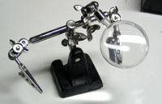

There are a few tools that are required for assembly. None of these tools are included. If you don't have them, now would be a good time to borrow or purchase them. They are very very handy whenever assembling/fixing/modifying electronic devices! I provide links to buy them, but of course, you should get them whereever is most convenient/inexpensive. Many of these parts are available in a place like Radio Shack or other (higher quality) DIY electronics stores.
I recommend a "basic" electronics tool set for this kit, which I describe here.
 |
Soldering iron. One with temperature control and a stand is best. A conical or small 'screwdriver' tip is good, almost all irons come with one of these. A low quality (ahem, $10 model from radioshack) iron may cause more problems than its worth! Do not use a "ColdHeat" soldering iron, they are not suitable for delicate electronics work and can damage the kit (see here) Check out my recommended basic soldering iron and where to buy. |
 |
Solder. Rosin core, 60/40. Good solder is a good thing. Bad solder leads to bridging and cold solder joints which can be tough to find. Dont buy a tiny amount, you'll run out when you least expect it. A half pound spool is a minimum. |
 |
Multimeter/Oscilloscope A meter is helpful to check voltages and continuity. |
 |
Flush/diagonal cutters. Essential for cutting leads close to the PCB. Check out my recommended basic diagonal cutters and where to buy. |
Desoldering tool. If you are prone to incorrectly soldering parts. Check out my recommended basic desoldering tool and where to buy. |
|
 |
'Handy Hands' with Magnifying Glass. Not absolutely necessary but will make things go much much faster. Check out my recommended basic 3rd hand tool and where to buy. |
| Good light. More important than you think. |
{kind=link}